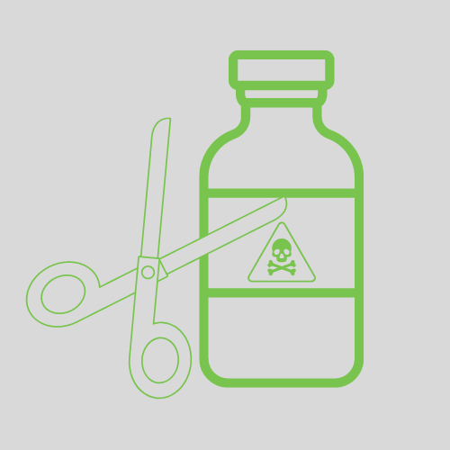
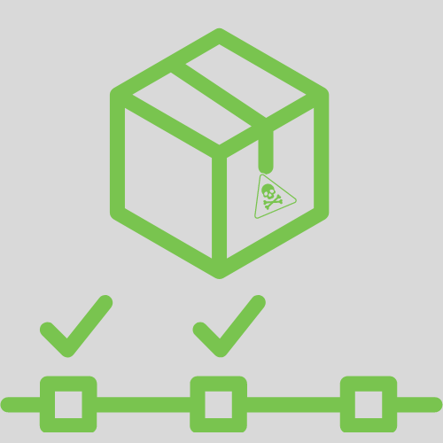
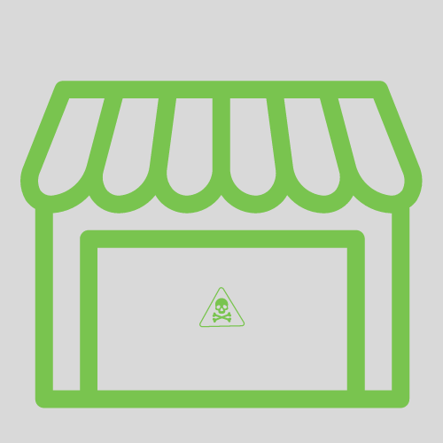

5 PASSOS PARA O DESCARTE CORRETO DOS RECIPIENTES DE AGROTÓXICOS
-
Lave bem as embalagens
É necessário, primeiro, esvaziar completamente as embalagens no tanque do pulverizador.Depois, deve-se adicionar água limpa em até um quarto do volume do frasco, tampe e agite por 30 segundos.Esta água também deve ser jogada no tanque do pulverizador. Repita a operação três vezes. Ela é chamada de tríplice lavagem.
-

Corte e faça furos para torná-las inutilizáveis
Após passarem pelo processo da tríplice lavagem, todas as embalagens devem ser inutilizadas (danificadas para que não sejam usadas como recipiente novamente). Para isso, corte o fundo da embalagem ou faça furos no fundo, atentando para ter a certeza de que ela não terá mais utilidade.
-

Leve a embalagem a um lugar apropriado
Armazene os frascos lavados e inutilizados em um local adequado e verifique com o revendedor do produto se ele pode recolher as embalagens, ou se você deve levá-las até um local indicado, geralmente um posto de recebimento ou na própria loja, respeitando a exigência de até um ano.
-

Devolução de recipientes
Todos os recipientes devolvidos – diretamente ou através da revenda – devem seguir para uma central de recebimento. As embalagens passam por um novo tratamento e de lá, seguem em blocos compactados e prensados para as indústrias recicladoras.
-
Guarde o comprovante
É muito importante nunca se esquecer de guardar o comprovante de devolução das embalagens. Este documento deve ser apresentado sempre que a fiscalização for até a propriedade, garantindo que o produtor não sofra nenhuma punição.